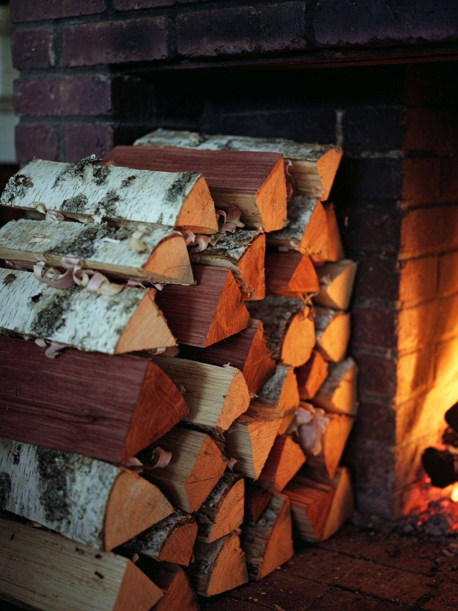
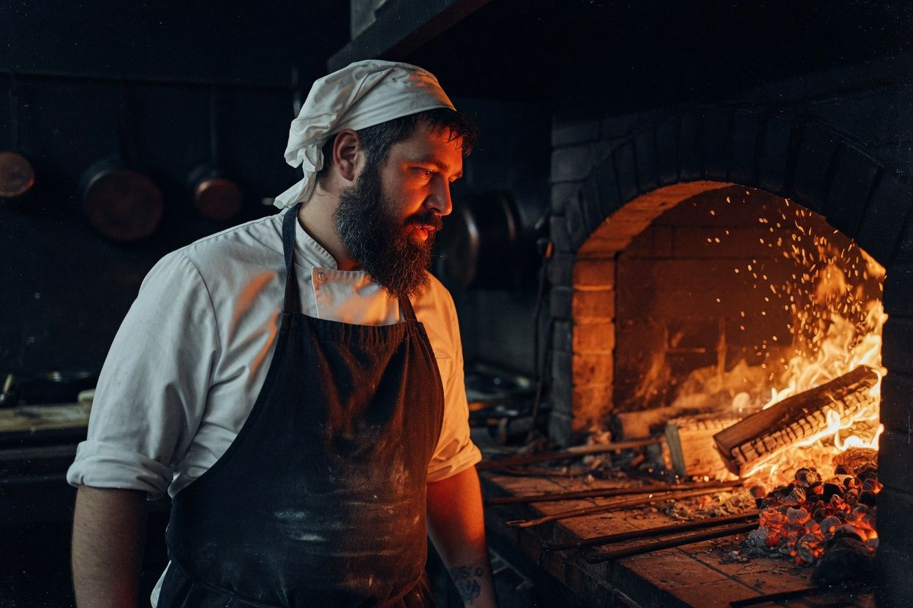
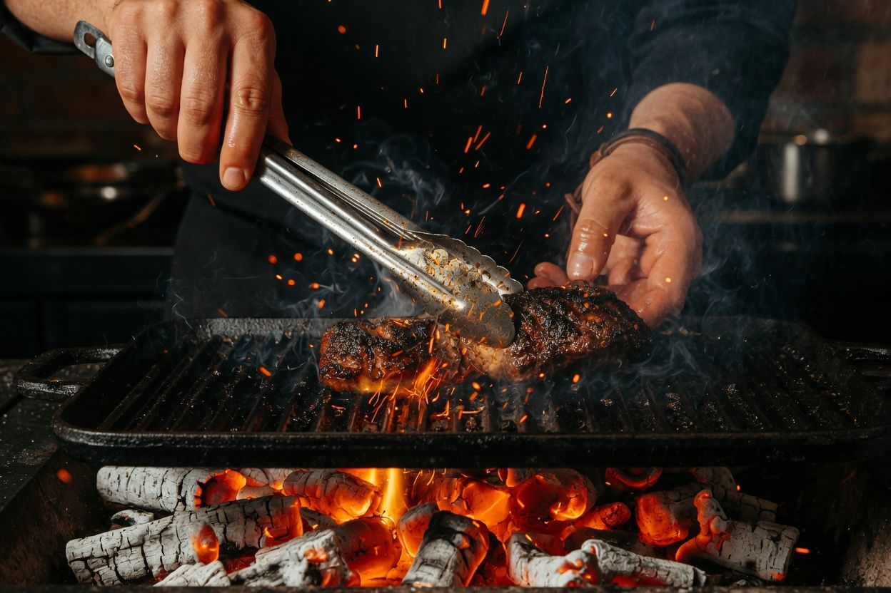
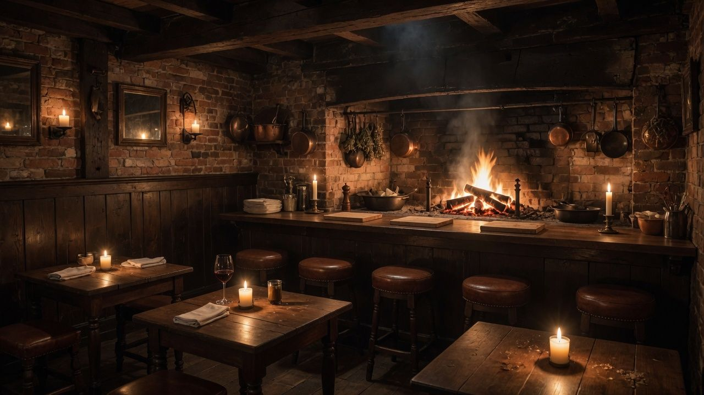

Ресторан открытого огняРождественская, 24
Всё, что на столе, видело огонь
Ни газа, ни индукции. Очаг на четыре метра у всех на виду, берёза, вишня и дуб, и семь подач, которые шеф доводит на углях при вас.
С двух часов дня
Огонь разжигают в два часа дня, чтобы к семи угли стали ровными
Каждое блюдо готовится на своём дереве. Берёза даёт сильный ровный жар, вишня сладкий дым, дуб держит температуру часами. Поэтому в меню рядом с названием стоит порода и сколько минут блюдо провело на огне.

- Берёзахлеб, рыба, овощи на решётке700 °C
- Вишняутка, свёкла, сладкий дым550 °C
- Дубмясо на кости, сорок часов900 °C
- Яблонямягкие угли для десертов300 °C
Ужин у очага
Семь подач у одного огня
Листайте: блюда выходят из огня в том порядке, в каком их подают. Сет меняется с сезоном, сейчас осенний.
01из 07
Хлеб из печи
Закваска, которой три года. Подаём горячим, с копчёным маслом и укропным маслом.
- Дрова
- берёза
- Жар
- 380 °C
- На огне
- 4 минуты
Сет из семи подач
6 900 ₽
С винами к каждой подаче
+ 4 200 ₽
Без алкоголя: морсы и настои
+ 2 400 ₽
Сет подаём с 18:00 до 21:30, ужин идёт около двух с половиной часов. Если кто-то не ест рыбу или мясо, скажите при брони: заменим подачу.

ШефОдиннадцать лет у огня
Артём Колосов
Огонь нельзя включить кнопкой. Его надо слушать: по звуку полена понятно, готов ли жар под рыбу или пора ставить мясо.
Артём учился у огня в Стамбуле и Тбилиси, потом шесть лет держал гриль в московском ресторане. «Угли» он открыл в родном Нижнем в 2019 году: двадцать шесть мест, очаг и ни одной плиты.

У огня каждый вечер
- Артём Колосовшеф
- Ника Гусевасу-шеф
- Илья Брагиногонь и мясо
- Даша Лаптевакондитер
- Марат Сафинсомелье
4,9
Яндекс Карты · 1 840 оценок
Сели за стойку у огня и весь вечер смотрели, как ребро снимают с дуба. Лучший ужин в Нижнем за год.
Свёкла из золы оказалась вкуснее стейка. Это я пишу как человек, который пришёл ради стейка.
Забронировала стол через сайт за минуту, выбрала прямо на схеме у окна. Встретили по имени.

Выберите стол, мы зажжём свечу
Тридцать два места в зале, восемь за стойкой у очага и кабинет на восемь гостей. Схема живая: занятые столы на выбранное время видно сразу.
Гостей
День
Время под временем видно, где свободно
Ваш стол
Выберите стол на схеме
Готово
Стол ваш